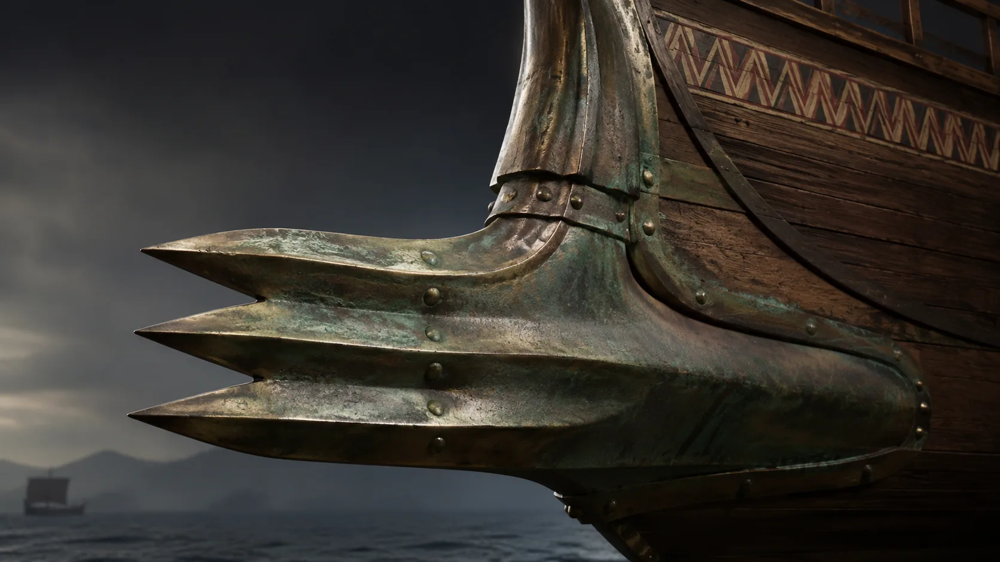
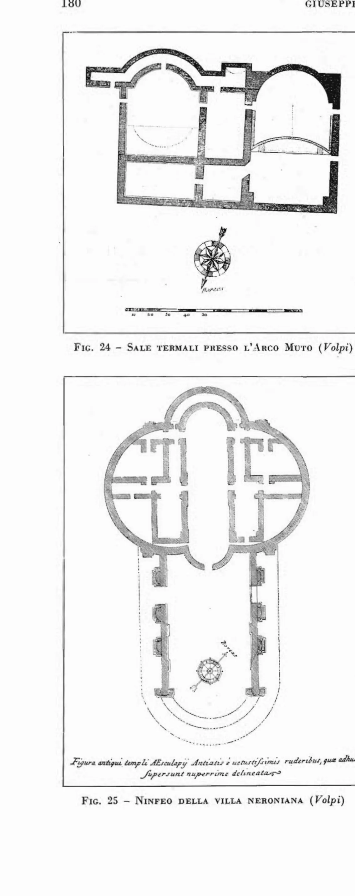
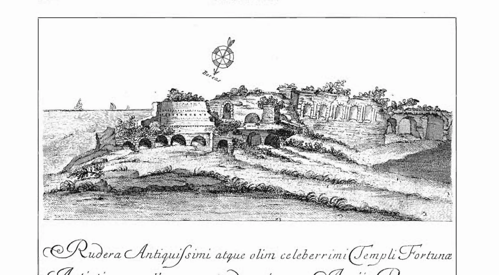

Volsci, Cicerone e gli dèi: Antium raccontata da chi la vide
L'occupazione volsca, Coriolano, la conquista romana, Cicerone bibliofilo, gli oracoli della Fortuna e i rostri nel Foro: dodici secoli di Antium nelle fonti scritte.
Una parola di Roma nata su una spiaggia di Anzio
Quando a Roma un oratore saliva a parlare al popolo, stava in piedi su una tribuna che si chiamava Rostra. Quel nome è partito da qui. Nel 338 a.C. Roma strappò alle navi di Anzio i loro speroni di bronzo, i rostri, e li inchiodò alla tribuna del Foro come trofeo. Rimasero lì per più di mille anni. Ma per arrivare a quel giorno di resa, Antium aveva già alle spalle secoli di guerra, di pirateria e di orgoglio.
Tre leggende per un nome
Da dove venga il nome Antium nessuno lo sa con certezza, e gli antichi si dividevano. Lo storico Xenagora, citato da Dionigi di Alicarnasso, la faceva fondare da Anteia, figlio di Ulisse e della maga Circe. Un'altra tradizione tirava in ballo Ascanio, figlio di Enea. Una terza, più sobria, la legava al latino antrum, «caverna», forse per qualche riparo nella roccia.
I pirati che fecero di Anzio la loro capitale
Tra la fine del VI e l'inizio del V secolo a.C. arrivarono i Volsci, un popolo italico che la tradizione romana dipingeva come «più bellicosi nel ribellarsi che nel condurre una guerra». Occuparono Velletri, Satrico, Anzio, e fecero proprio di Antium la loro capitale, il caput Volscorum. Vivevano di mare: navigazione e pirateria, «praticata fino al Mar Egeo». Le scorrerie partivano dal porto, che chiamavano Caenon, una parola che voleva dire «nuovo», o forse «sporco».
Coriolano, l'esule che voleva distruggere Roma
Per un secolo e mezzo Anzio e Roma si fecero la guerra. L'episodio più famoso ha per protagonista un romano, non un anziate: Caio Marzio Coriolano, esiliato dalla sua città, venne a rifugiarsi proprio qui, ospite del nobile Attio Tullio. Lo convinse a guidare i Volsci contro Roma, e arrivò a minacciarla da vicino. Lo fermarono le donne romane, guidate da sua madre Veturia. Tornato ad Anzio, fu processato e ucciso nel foro della città, per ordine dello stesso uomo che lo aveva accolto.
Le battaglie si susseguirono. Nel 484 a.C. gli Anziati vinsero fingendo di ritirarsi e poi voltandosi a colpire. Nel 468 a.C. toccò a Roma, con il console Tito Quinzio Capitolino Barbato, che devastò gli arsenali del porto. Ma il vallo di Anzio tenne, e ci vollero altri centotrent'anni perché la città cadesse.
La resa del 338 e i rostri nel Foro
La fine arrivò nel 338 a.C., durante la Guerra Latina, con la battaglia del fiume Astura. I consoli Lucio Furio Camillo e Caio Menio distrussero o sequestrarono la flotta anziate. Agli abitanti fu proibito l'uso del mare, e nella città fu dedotta una colonia romana. Gli speroni delle navi bruciate, i rostri, furono portati a Roma e fissati alla tribuna degli oratori nel Foro, che da allora si chiamò Rostra. Nel 317 a.C. Anzio divenne municipio romano.

Tre colonie in tre secoli
Dopo la resa, Roma non fece di Anzio una colonia sola: ne fece tre, una dietro l'altra, in tre secoli diversi. La prima arrivò già nel 467 a.C., ed era una colonia latino-ernica: i Romani dovettero aprire le iscrizioni a Latini ed Ernici perché la loro stessa plebe la colonizzazione la sentiva come un esilio, non come un premio, e non voleva partire. Agli Anziati superstiti fu lasciata una parte delle terre. La seconda venne con la disfatta del 338 a.C.: stavolta una colonia di soli cittadini romani, con i vecchi anziati iscritti nelle tribù Mecia e Scapzia. La terza la dedusse Nerone, che ad Anzio era nato: dopo che la città era stata quasi cancellata dal sacco di Caio Mario, vi insediò una colonia di veterani del pretorio e di ricchi primipili. Sulle monete di quegli anni si legge il suo nome ufficiale, COLONIA ANTIVM.
Cicerone, che ad Anzio veniva a stare bene
Per sapere com'era Anzio nel I secolo a.C. basta leggere Cicerone. Nelle lettere all'amico Attico confessa che qui stava più volentieri che in qualsiasi altro posto. Gli chiedeva una mano per sistemare la biblioteca della villa: prima il liberto Tirannione, poi due copisti, Dionisio e Menofilo. Raccontava dei bei combattimenti di gladiatori e dei giochi dei primi di maggio.
C'è un dettaglio che dice molto. Cicerone descrive la sua villa «in oppido», dentro le mura, ancora cinta dal vecchio vallo volsco. Quando Attico vuole comprare una proprietà, Cicerone gli scrive che nella campagna non trova nulla di costruito, ma che «in oppido est quiddam… et proximum quidem nostris aedibus». Segno che a metà del I secolo a.C. Antium era ancora una città murata.
Un acquedotto e un santuario di guerra (170 a.C.)
Un secolo prima di Cicerone, nel 170 a.C., il pretore Caio Lucrezio aveva dotato Anzio di un acquedotto, portando l'acqua dal fiume Loracina, e aveva decorato il santuario di Esculapio con quadri presi come bottino in Macedonia.
Dove sorgesse quel santuario, oggi nessuno sa dirlo. Ma a metà Ottocento qualcuno credeva ancora di vederlo. Francesco Lombardi, nel 1847, scriveva che chi da Anzio andava a Nettuno vedeva «al lato sinistro del porto Innocenziano, presso la spiaggia» gli avanzi del «vetustissimo tempio di Esculapio»; e raccontava la leggenda del serpente sacro di Epidauro che, costretto dalla tempesta a sbarcare qui, salì su un albero di mirto piantato nell'atrio e vi rimase tre giorni prima di riprendere il viaggio verso Roma. Di quelle rovine i sopralluoghi archeologici successivi non hanno più trovato traccia: la sede del santuario è tornata a essere un mistero.
Un indizio sulla posizione, però, sta proprio nei versi antichi. Lugli osservò che Ovidio, raccontando la sosta del serpente, scrive che questo «templa parentis init flavum tangentia litus», entra nel tempio del padre che tocca la spiaggia bionda: il santuario stava dunque sul mare, nell'area stessa del porto. Quanto alla pianta che il Volpi aveva pubblicato nel 1726 come «tempio di Esculapio», per Lugli si tratta di un'«arbitraria attribuzione» e l'edificio somiglia piuttosto a un ninfeo; Jaia è andato oltre: basta ruotare la figura di novanta gradi per riconoscervi lo stesso edificio che Bianchini chiamava teatro, cioè un settore termale della villa imperiale. Del tempio di Esculapio, insomma, non abbiamo neanche una pianta.

Gli dèi di Antium
La Fortuna che dava i suoi oracoli
Il culto più importante era quello della Fortuna, antichissimo e legato a quello celebre di Palestrina. Orazio la invoca per Cesare in partenza per la Britannia; i cavalieri la pregano per Livia come Fortuna Equestre. Quando Poppea aspetta un figlio, le immagini delle due Fortune, quella di Palestrina e quella di Anzio, vengono portate fino al tempio di Giove sul Campidoglio per proteggere il parto.
Le Fortune di Anzio erano due, e rispondevano a chi le interrogava: si estraevano a sorte tavolette o astragali, i sorti. Il santuario stava forse dove poi sorse il convento di San Francesco a Nettuno, dove nel 1585 si trovò un'iscrizione dedicatoria. L'episodio più celebre riguarda Cassio Longino: chiese alla Fortuna un oracolo sulla congiura contro Caligola. Interrogata sulla vita dell'imperatore, la dea rispose annunciando invece la salvezza del congiurato.
Ma il tempio, quello vero, nessuno l'ha mai trovato. Lugli, che nel 1940 passò al setaccio tutte le candidature, fu spietato: il sito «resta completamente ignoto». Gli edifici che il Volpi aveva inciso nel 1726 come «celeberrimi templi della Fortuna» non hanno per Lugli «l'aspetto di tempio»: sembrano piuttosto horrea, magazzini annonari del porto. La collocazione a villa Albani proposta dal Tomassetti è «una semplice supposizione»; le rovine di villa Spigarelli hanno «il carattere di una costruzione privata». L'unico vero indizio è una scoperta del 1879: una considerevole stipe votiva di terrecotte nell'orto di Francesco Perucci, poco discosto dal cosiddetto Sepolcro di Coriolano. Ma tutta in frantumi e fuori posto, «scaricata da una località più alta». Il tempio era dunque lassù, da qualche parte sul ciglio del pianoro: più vicino di così, per ora, non si arriva.

Venere e il suo campo di offerte
Ad Anzio si venerava anche Venere Afrodisia, in un campus Veneris dove i fedeli portavano uva, fichi, olive, focacce, e appendevano alle pareti del tempio le loro tavolette di ringraziamento. Dove fosse di preciso non si sa: le fonti lo collocano tra il faro e l'Arco-muto.
Anche qui la testimonianza d'epoca dice più di quanto resti. Nel 1847 Lombardi annotava che «dalla parte occidentale del porto Neroniano restano ancora non basse rovine del tempio di Venere Afrodisea»; e ricordava che il primo Aphrodisium, presso Ardea, aveva attorno un campo per i pellegrini detto ai suoi tempi «Campo femini», presso la torre dell'Ajanico, dove nel 1794, a relazione del Fea, gli scavi restituirono «un bel simulacro di quella Dea». Il gesuita Volpi supponeva nel tempio anziate anche un sacrario di Marte, sulla scorta di un'iscrizione Mavortio Victori dissepolta dalle sue rovine. Di quelle «non basse rovine» oggi non rimane nulla di riconoscibile in piedi.
Nettuno, Salacia e il dio venuto dall'Oriente
In una città di mare non poteva mancare Nettuno, affiancato dalla sposa Salacia, dea delle acque profonde e calme. E poi, a sorpresa, Mitra: nel 1699, recuperando materiali per il cantiere del porto innocenziano, tornò alla luce un rilievo marmoreo che lo raffigura mentre uccide il toro, tra i due fanciulli con la fiaccola (Cautes e Cautopates), un serpente, un cane, un granchio e il volto raggiante del sole. Oggi è al Museo Lapidario Maffeiano di Verona. Un dio venuto dalla Persia, diffuso nell'Impero soprattutto tra i soldati: la prova che la piccola colonia di mare era pienamente dentro la vita religiosa di Roma.
Dei templi di Nettuno, Lombardi ne conosceva due. Uno sorgeva dove oggi è il paese che ne porta il nome, e ai voti dei naviganti di ritorno rimandavano «i molti marmi e tavole votive colà scoperti». L'altro, di età romana, stava presso la villa imperiale, sul ripiano dell'allora villa Mencacci: dagli scavi uscirono trentadue capitelli marmorei e una fila di basi di colonne ancora al loro posto: tutto, tranne le basi, «offeso dall'azione di un incendio distruttore». Quei capitelli erano un piccolo manifesto marino: dalle tazze scolpite al posto dei fusti si levavano delfini che, inarcando le code, andavano a formare le volute; e di fronte all'abaco, al posto del fiorone, «una graziosa conchiglia avente nel grembo un granchio marino». Simboli che per Lombardi non lasciavano dubbi sulla dedica al dio del mare. Dei trentadue capitelli, oggi, si sono perse le tracce.
E dove si radunassero i fedeli di Mitra è un'altra domanda aperta. Gli antiquari del Sei-Settecento (Volpi, Ligorio e monsignor Della Torre, riportati da Lombardi) indicavano le latomie presso l'Arco Muto: le vecchie cave di arenaria del promontorio, lunghe spelonche comunicanti tra loro per ambulacri bassi e angusti, dove appunto nel secolo XVII si rinvenne la tavola di bronzo del dio. Filippo Della Torre, che il rilievo lo pubblicò nel 1700, guardava invece più in basso: vicino al punto del ritrovamento, dove finiva l'antico arsenale e il terreno risale verso la città, vedeva «luoghi cavernosi e recessi interni» e giudicava facile riconoscervi una spelonca di Mitra. Suggestioni, non prove: il mitreo di Anzio resta da trovare.
Gli dèi minori di una città di mare
Le iscrizioni raccolte da Lugli aggiungono al pantheon anziate una piccola folla di divinità che nessuna rovina racconta più. C'era un santuario di Cerere Anziatina, documentato da una dedica dell'85 d.C. oggi al Museo Maffeiano di Verona; uno della Spes Augusta, la Speranza imperiale, con i suoi sacerdoti Augustali. E poi due culti che solo un popolo di naviganti poteva coltivare con tanta serietà: quello della Tranquillità e quello dei Venti: il mare calmo e il vento giusto, divinizzati e pregati ciascuno col proprio altare. Un grande frammento di architrave porta infine il nome di Adriano e parla del restauro di un tempio: quale, non lo sapremo finché il marmo non ritroverà il suo edificio.
Satricum, la città-figlia, e la dea che non bruciava
Anzio non fu soltanto conquistata: a sua volta conquistò. Nei suoi anni migliori fondò una propria colonia nell'entroterra, Satricum, che gli antichi collocavano dove oggi è la località di Conca, tra Nettuno, Velletri e Cisterna. Per generazioni fu la grande piazzaforte dei Volsci lontano dal mare. Lì sorgeva un celebre tempio della Mater Matuta, la dea dell'aurora e dei porti. E proprio attorno a quel tempio nacque la storia che gli anziati raccontavano con più orgoglio: ogni volta che i nemici davano la città alle fiamme, il santuario della dea restava intatto in mezzo al rogo. Si tramandava che dai suoi penetrali uscissero «voces horrendae», voci tremende, a fermare l'incendio che i Latini appiccavano. Vero o no, quel racconto dice una cosa sola: quanto profondamente questa gente di mare credeva nei propri dèi.
Dov'era il cuore della città?
Seguendo il tracciato delle strade più antiche, che si incontrano nella valletta tra Villa Sarsina e Villa Albani, gli studiosi pensano di aver individuato qui l'area del foro. Lo suggeriscono le costruzioni monumentali sotto le case del quartiere, la linea del circo che le sfiora, la discesa al porto dall'antica porta volsca. E il colle di Villa Sarsina, oggi sede del Municipio, potrebbe essere stato l'acropoli della città antica, forse con un tempio a Ercole: lo stesso Ercole a cui rimanda l'elegante «Ninfeo di Ercole» di età neroniana, oggi al Museo Civico.
La prossima volta che a Roma senti nominare i Rostri, ricordati che quel nome è partito da una spiaggia del Tirreno, dalle navi di una città che a Roma aveva resistito per due secoli. Anzio non è un margine della storia romana: ne è una delle radici.
Cronologia storica essenziale
| Data | Evento | Fonte |
|---|---|---|
| Fine VI – inizi V sec. a.C. | Occupazione volsca; Antium diventa caput Volscorum | Livio, Dionigi |
| 489–488 a.C. | Saga di Coriolano; guerra contro Roma | Plutarco, Dionigi VIII |
| 484 a.C. | Vittoria degli Anziati con la finta ritirata | Livio II |
| 468 a.C. | Vittoria di Tito Quinzio Capitolino Barbato; devastazione del porto | Livio II |
| 467 a.C. | Prima colonia latino-ernica dedotta ad Antium | Livio III; Vulpio II |
| 338 a.C. | Conquista romana; battaglia del fiume Astura; Rostri al Foro | Livio VIII; Plinio |
| 317 a.C. | Antium diventa municipio romano | Livio IX |
| 170 a.C. | Pretore Lucrezio: acquedotto dal Loracina; santuario di Esculapio | Livio XLIII |
| 56–45 a.C. | Cicerone ad Anzio: villa in oppido, biblioteca, ludi | Lettere ad Attico |
| 2 a.C. | Augusto nella villa anziate rifiuta il titolo di Pater Patriae | Svetonio |
| 12 e 37 d.C. | Nascita di Caligola e Nerone nella villa anziate | Svetonio |
| 465–501 d.C. | I vescovi di Anzio (Gaudenzio, Felice, Vindemio) ai concili e sinodi romani | Ughelli (in Lombardi) |
| ~470 d.C. | Rostra Vandalica nel Foro: ultima eco di Antium a Roma | CIL VI |
| 537 d.C. | Ultima menzione del porto di Anzio nelle fonti scritte | Procopio, De Bello Gothico |